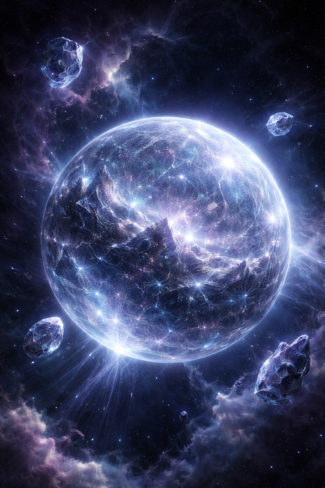

Description
Status: Hidden Sanctuary of the Crystal Wielders
Sun: Primary Star — Nytheris
moons: 4
Zarnis — Planetary Definition
Elarra is a rare crystalline world hidden deep within the Great Hollow, a nebular void so dense it consumes most incoming light. From the outside, the region appears as a dark wound in the galaxy — an absence where stars seem to fail. Yet within this obscuring veil, Elarra endures.
Unlike conventional planets, Elarra possesses no oceans, weather systems, or organic continents. Its surface is composed of immense faceted crystalline planes that refract distant starlight into vast, slow-moving auroral patterns. Mountain ranges rise like frozen waves of translucent mineral, while its valleys shimmer with drifting prismatic particulates — not mist, but suspended crystal dust carried on slow atmospheric currents.
The planet emits no thermal glow.
It shines with memory.
Faint pulses of violet, pale blue, and muted gold travel across its surface in measured rhythms, suggesting processes that are neither geological nor fully understood. The illumination is ancient and deliberate, as though the world itself exists in a state of slow, patient awareness.
Orbiting Elarra are several fractured moons — irregular spheres composed of massive crystalline shards held in perfect gravitational cohesion. Their edges remain razor-sharp yet perfectly stable. Some rotate slowly, revealing interiors of intricate lattice structures resembling frozen cathedrals; others remain motionless, as if rotation has long since become unnecessary. These moons function as silent sentinels, scattering ribbons of refracted light across the surrounding void.
Elarra serves as the hidden sanctuary of the Council of Higher Minds, often referred to as the Crystal Wielders — an ancient collective whose connection to the planet appears both technological and deeply intrinsic.

Within the Great Hollow, where light itself struggles to survive, Elarra persists.
a world of crystal, memory, and thought.
Primary Star — Nytheris
Elarra orbits an anomalous stellar object known as Nytheris, a rare gravitic-luminous star located deep within the obscuring density of the Great Hollow. Unlike conventional stars, Nytheris emits comparatively little broad-spectrum light. Instead, it radiates in narrow, highly coherent bands a world of crystal, memory, and thought. that interact strongly with crystalline matter.

But within the Hollow, its influence is profound.
The star produces slow, rhythmic pulses of polarized energy that resonate directly with Elarra’s crystalline crust. These pulses are believed to be responsible for the planet’s characteristic memory-glow — the faint waves of violet, pale blue, and muted gold that travel across its surface.
Astrophysical scans suggest Nytheris is neither fully stable nor conventionally nuclear in its energy generation. Its core signatures indicate layered gravitic compression zones interwoven with exotic matter densities, leading some xenophysicists to classify it as a Resonant Phase Star — an extremely rare stellar state theorized but seldom confirmed.
Notably, Nytheris emits minimal radiation hazardous to biological life, yet produces unusually strong coherence fields in the surrounding system. These fields are thought to:
- stabilize Elarra’s fractured moons
- maintain crystal lattice integrity on a planetary scale
- and possibly enhance psionic or consciousness-linked phenomena within the system
Whether Nytheris formed naturally… or was engineered in a forgotten epoch… remains an open question among the few who know Elarra exists.